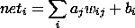
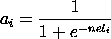
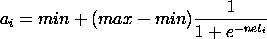

In this phase, the activations of the input units are set to the values given in the input pattern, and activation is propagated forward through the network to set the activations of units at successively higher-numbered layers, ending with the output layer. The idea is that the connection weights determine the outcome of this process, and the purpose of this pass is to determine how closely this outcome matches the target. During this pass, we calculate two quantities for each unit: First the net input it receives from the units that project to it, and second the activation, based on the net input. The net input is simply the sum, over all of the incoming connections to the unit, of the weight of the connection times the activation of the sending unit, plus a bias term:
This sum may run over all of the units in all of the lower-numbered layers, but the connectivity may be restricted by design. the term w_ij signifies the weight to unit i from unit j, and the term b_i signifies the bias associated with unit i. The activation is simply a monotonically increasing sigmoidal function of the net input. The simulator uses the logistic function:
The activation ranges from 0 to 1 as the net input ranges from minus infinity to infinity. As an option other ranges can be used, in which case the function becomes
